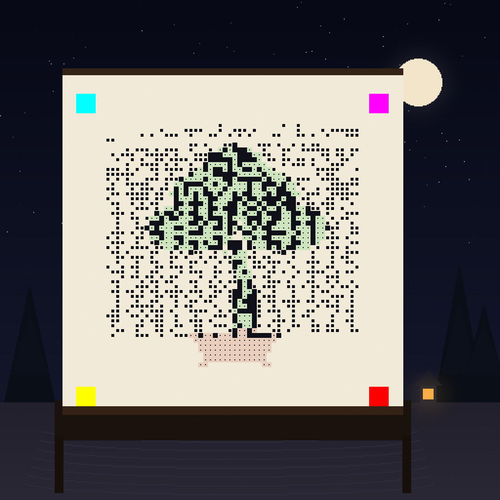

Squint: a bonsai. Scan: a certificate.
The matrix stops hiding and starts painting. Every ink cell's fill is modulated by a bonsai reference — canopy pads, trunk, pot — while the decoder's majority vote still reads every bit. The picture is made of the code, not pasted over it. A hanging scroll in a night garden, stone lantern burning, third and final shard in the bits.

What the tree says
{
"collection": "night-districts",
"piece": 15,
"supply": 100,
"traits": {"weather":"still","district":"arashiyama",
"palette":"ink-moss","sign":"bloom"},
"rarity_rank": 1,
"art": "d33953b240d47499"
}
Signed by the studio key (demo): 038e2cb0…6538 · action 0xA47C · target NFT1. Scan the scroll with the scanner.
How a picture lives inside the data
The decoder majority-votes the central 60% of each cell. That leaves each cell's fill as a free tone channel — as long as the center stays on the right side of the threshold, the bit survives. This piece uses a five-tone alphabet:
| Cell renders as | Bit | Used for |
|---|---|---|
| Full-ink square (100%) | 1 | bonsai core — trunk, pads, pot |
| Large square (80%) | 1 | tree mid-tones |
| Medium square (60% — the safe floor) | 1 | sky texture on dark bits |
| Single dot | 0 | tree shade on light bits |
| Empty paper (+ moss/terracotta tint) | 0 | sky |
Two hard-won rules: integer rasterization only (float coordinates floor unpredictably and shrink ink below the sample threshold) and 60% side is the safe floor for a dark cell — exactly the decoder's sample span. Squint at the scroll and the five tones dissolve into a tree.
Verified by two independent implementations
Python reference decoder
[png] sig: VALID cert: MATCH [jpg] sig: VALID cert: MATCH lsb shard: OK (103 bytes)
JavaScript site decoder
9 passed, 0 failed signature VALID · action 0xA47C target NFT1 · traits ✓ · art hash ✓
Three shards, one root
Shard 1 — #13 Facade
"the other two signs hang elsewhere in the district" View →
Shard 2 — #14 Rooftop
"one sign remains — it blooms, it does not hang" View →
Shard 3 — this piece
"three shards, one root — the district is complete". Extract all three LSB shards from the PNG originals and the trail resolves.
The series: #12 Alley (billboard) · #13 Facade (texture) · #14 Rooftop (signature) · #15 Bonsai (the code as the painting). Four depths of the same idea: the certificate lives in the artwork itself.